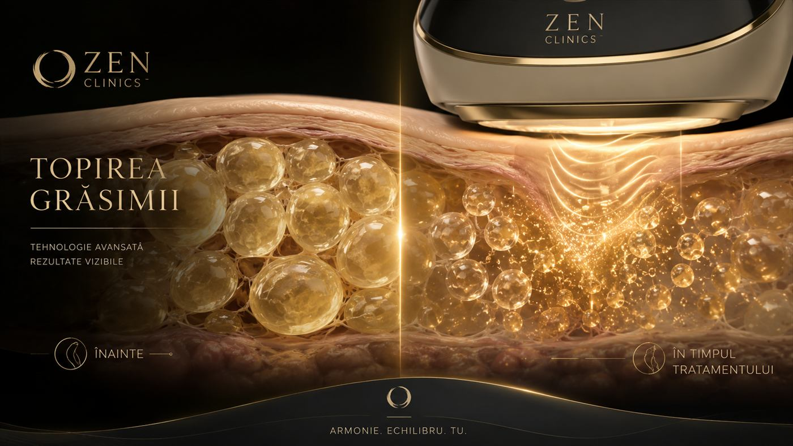
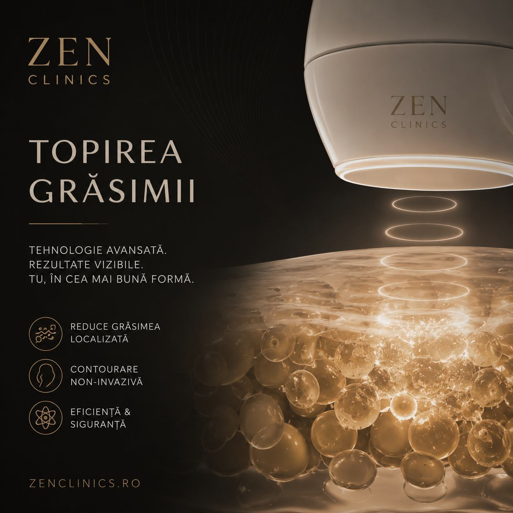

Vizeaza zone, nu kilograme
Procedura se discuta pentru depozite localizate și contur corporal. Greutatea de pe cantar poate sa nu reflecte fidel modificarile de forma sau de circumferinta.

Contur corporal
O abordare non-chirurgicala pentru depozite localizate și contur corporal, discutată în funcție de anatomie, calitatea pielii, obiective și limite realiste.
Abordare
Topirea grasimii se adreseaza in principal depozitelor localizate, adica zonelor in care tesutul adipos persista in ciuda unui stil de viata echilibrat. Scopul nu este scaderea generala in greutate, ci rafinarea conturului și imbunatatirea proportiilor într-un mod gradual.
Procedura se discuta individual, pentru ca rezultatul depinde de zona tratată, grosimea stratului adipos, calitatea pielii, metabolism, stil de viata și indicația medicală. Nu este echivalenta cu liposuctia chirurgicala și nu poate inlocui alimentatia, miscarea sau tratamentele recomandate pentru afecțiuni metabolice.
La ZEN Clinics, consultația este etapa cea mai importanta: stabilim daca procedură are sens pentru tine, ce zone pot fi abordate, cate ședințe pot fi necesare și ce asteptari sunt realiste. Daca exista o optiune mai potrivită, recomandarea se ajusteaza transparent.
Ce trebuie sa stii
Informatiile exacte despre tehnologia folosita, durata sedintelor și protocol se confirma in clinică, în funcție de aparatura și indicația stabilita. Mai jos sunt reperele generale pe care orice client ar trebui sa le inteleaga înainte de programare.
Procedura se discuta pentru depozite localizate și contur corporal. Greutatea de pe cantar poate sa nu reflecte fidel modificarile de forma sau de circumferinta.
Corpul are nevoie de timp pentru a răspunde la protocol. Evolutia se urmărește progresiv, iar fotografiile de control pot ajută la evaluarea obiectiva.
Elasticitatea pielii, tonusul și istoricul zonei influenteaza recomandarea. Uneori poate fi nevoie de proceduri complementare pentru fermitate sau textura.
Cadru vizual


Indicatie
Indicația se stabilește individual. Procedura poate fi discutată pentru zone localizate, dar nu este potrivită pentru toate persoanele, toate varstele sau orice tip de tesut.
Poate fi avuta in vedere pentru zone mici sau medii in care exista tesut adipos localizat, dupa evaluare atentă.
Urmareste rafinarea siluetei, nu transformari rapide sau scadere generala in greutate.
Numarul de ședințe și intervalele se stabilesc în funcție de raspunsul individual.
Contraindicațiile, limitele și asteptarile se discuta înainte de orice procedură.
Este mai potrivită atunci când greutatea este relativ stabila și obiectivul tine de forma, nu de slabire accelerata.
Rezultatul poate fi discret sau progresiv. Este important ca obiectivul sa fie discutat clar in consultație.
Zone discutate
Zonele se confirma doar dupa evaluare. Lista de mai jos este orientativa și nu inseamna ca procedură este indicata automat pentru fiecare persoana.
Poate fi discutat atunci când exista depozite localizate și pielea are caracteristici potrivite pentru protocol.
Zona taliei poate necesita abordare etapizata și evaluarea proportiilor generale ale corpului.
Se analizeaza grosimea tesutului, fermitatea pielii și eventualele recomandări complementare.
Barbia dubla sau conturul mandibular se discuta cu prudentă, în funcție de anatomie și indicație.
Experiența
Discutam zona dorita, obiectivele, istoricul medical, fluctuatiile de greutate și eventualele tratamente in curs.
Se analizeaza grosimea tesutului, calitatea pielii, simetria și daca procedură are indicație reala.
Se stabilesc zona, intervalele, posibila nevoie de ședințe repetate și recomandările de pregatire.
Tratamentul se efectueaza conform protocolului stabilit, cu monitorizarea confortului și a reactiei zonei.
Monitorizarea ajută la evaluarea raspunsului, ajustarea protocolului și stabilirea pasilor urmatori.
Obiective estetice
Poate contribui la diminuarea depozitelor localizate, în funcție de raspunsul individual.
Are ca obiectiv rafinarea proportiilor, fara promisiuni de rezultat garantat.
Poate fi parte dintr-un protocol mai amplu de intretinere și echilibru corporal.
In funcție de tehnologia indicata, abordarea poate fi non-chirurgicala și fara incizii, dar detaliile se confirma la consultație.
Se poate integra într-un program de remodelare gradual, cu obiective masurate și discutate înainte.
Accentul este pus pe echilibru vizual și pe modul in care zona tratată se raporteaza la restul corpului.
Detalii importante
Inainte de ședință, este util sa comunici tratamentele urmate, afectiunile cunoscute, alergiile și eventualele interventii recente. Recomandările exacte se ofera in clinică.
Pot exista recomandări legate de hidratare, activitate fizica usoara, evitarea anumitor factori sau monitorizarea zonei. Acestea depind de protocol și de reactia individuala.
In funcție de metoda, pot aparea temporar sensibilitate, roseata, edem, vanatai sau disconfort local. Orice reactie persistenta trebuie comunicata clinicii.
Anumite afecțiuni, sarcina, alaptarea, infectiile locale, tulburarile de coagulare sau unele tratamente pot limita indicația. Evaluarea medicală este necesară.
Rezultatul poate fi influentat de stilul de viata, greutate, hidratare, varsta, metabolism și consistenta recomandărilor post-procedură.
Daca exista laxitate importanta, exces de piele sau volum adipos mare, poate fi nevoie de alta abordare sau de o combinatie de proceduri.
FAQ
Nu. Procedura se discuta pentru zone localizate și contur, nu ca metoda de scadere ponderala generala.
Numarul de ședințe depinde de zona, obiectiv și raspunsul individual. Planul se confirma dupa evaluare.
Nu se pot garanta rezultate. Raspunsul variaza în funcție de organism, zona, stil de viata și respectarea recomandărilor.
Zonele se stabilesc in consultație, în funcție de indicație, grosimea tesutului și obiectivul realist.
Da. Recomandările se ofera in clinică și pot include hidratare, miscare usoara sau alte indicații adaptate protocolului.
Modificarile pot fi progresive și depind de organism, zona și protocol. In consultație se explica intervalul realist de urmarire, fara promisiuni absolute.
Uneori, da. Combinatiile se stabilesc individual, mai ales cand exista și obiective de fermitate, textura sau remodelare mai ampla.
Este important sa mentionezi afecțiuni, medicatie, interventii recente, alergii, sarcina sau alaptare și orice schimbare semnificativa de greutate.
Experiența
La ZEN Clinics, frumusețea ta este înțeleasă în profunzime. Îmbinăm știința, arta și empatia pentru rezultate care te reprezintă.
Consultație
Programeaza o consultație pentru a discuta daca procedură este potrivită pentru obiectivele și anatomia ta.
Contactează-ne